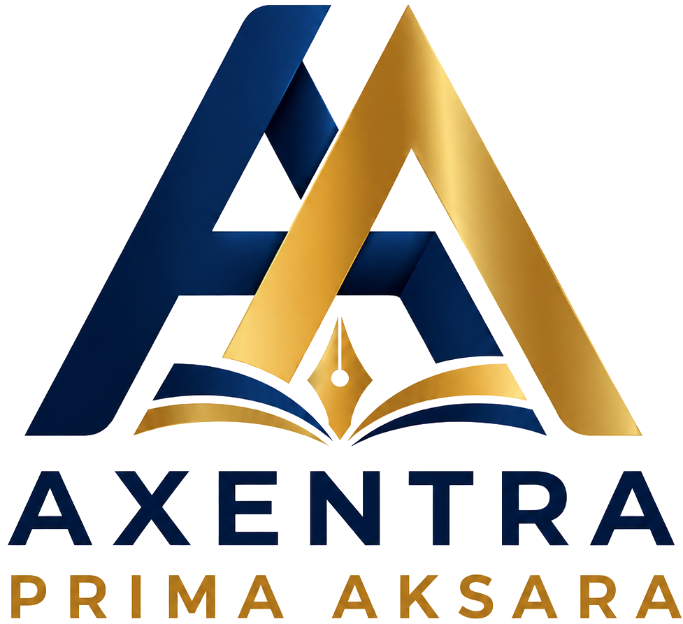

01
Bimbingan Skripsi & Tesis
Pendampingan dalam proses penyusunan skripsi dan tesis mulai dari perencanaan penelitian, penyusunan bab, pembahasan, hingga persiapan menghadapi tahap akhir penelitian.
Konsultasi →
Mendukung Karya, Menguatkan Prestasi.
Kami membantu Anda memahami, menyusun, mengolah, dan menyempurnakan kebutuhan akademik dengan pendekatan yang sistematis.

Axentra Prima Aksara merupakan layanan pendampingan dan konsultasi akademik yang menyediakan berbagai kebutuhan akademik, mulai dari bimbingan skripsi dan tesis, pengolahan data statistik, penulisan karya ilmiah, literature review, editing dan proofreading, makalah serta konsultasi tugas, hingga konsultasi akademik.
Layanan mencakup berbagai kebutuhan di bidang sosial humaniora dan kesehatan, dengan pendekatan yang sistematis, komunikatif, dan disesuaikan dengan kebutuhan setiap klien.
Axentra Prima Aksara telah memiliki Nomor Induk Berusaha (NIB) sebagai identitas legalitas usaha.
Axentra Prima Aksara memberikan layanan pendampingan akademik secara online kepada klien dari berbagai wilayah di Indonesia. Peta berikut menggambarkan persebaran wilayah klien yang telah menggunakan layanan kami.

Kehadiran klien dari berbagai wilayah menjadi bagian dari perjalanan Axentra Prima Aksara dalam memberikan pendampingan akademik secara fleksibel dan berbasis kebutuhan.
Dengan sistem konsultasi dan pendampingan secara online, lokasi bukan menjadi batas untuk memperoleh layanan akademik yang terarah dan komunikatif.
Pilih layanan sesuai kebutuhan dan diskusikan kebutuhan Anda bersama tim Axentra Prima Aksara.
Pendampingan dalam proses penyusunan skripsi dan tesis mulai dari perencanaan penelitian, penyusunan bab, pembahasan, hingga persiapan menghadapi tahap akhir penelitian.
Konsultasi →Pendampingan pengolahan dan interpretasi data menggunakan pendekatan statistik sesuai kebutuhan penelitian, termasuk SPSS, SmartPLS, dan analisis data.
Konsultasi →Pendampingan penulisan karya ilmiah dengan memperhatikan struktur tulisan, sistematika, argumentasi, referensi, dan ketepatan akademik.
Konsultasi →Pendampingan pencarian, pemetaan, sintesis, dan penyusunan literature review untuk membantu membangun landasan teori dan kajian penelitian.
Konsultasi →Pemeriksaan dan penyempurnaan dokumen untuk membantu meningkatkan keterbacaan, struktur tulisan, konsistensi bahasa, dan kerapian naskah.
Konsultasi →Konsultasi untuk membantu menemukan arah, menyusun strategi, dan memahami berbagai kebutuhan akademik secara lebih terstruktur.
Konsultasi →Pendampingan dalam memahami instruksi, menyusun kerangka, mengembangkan pembahasan, dan merapikan tugas akademik sesuai kebutuhan.
Konsultasi →Layanan akademik untuk berbagai kebutuhan pada bidang sosial humaniora dan kesehatan dengan pendekatan yang disesuaikan.
Konsultasi →Lihat beberapa dokumen portofolio yang tersedia.
Anda dapat menghubungi Axentra Prima Aksara melalui WhatsApp. Sampaikan kebutuhan akademik Anda dan kami akan membantu mendiskusikan layanan yang sesuai.
Ya. Konsultasi dapat dilakukan secara online dengan menyesuaikan kebutuhan dan kesepakatan.
Ya. Axentra Prima Aksara menyediakan pendampingan pengolahan dan interpretasi data statistik sesuai kebutuhan penelitian.
Layanan mencakup berbagai kebutuhan akademik pada bidang sosial humaniora dan kesehatan.
Harga disesuaikan dengan jenis layanan, tingkat kebutuhan, dan kompleksitas pekerjaan. Silakan hubungi kami untuk konsultasi terlebih dahulu.
Sampaikan kebutuhan akademik Anda kepada kami dan mari diskusikan bentuk pendampingan yang sesuai.
Konsultasi via WhatsApp →